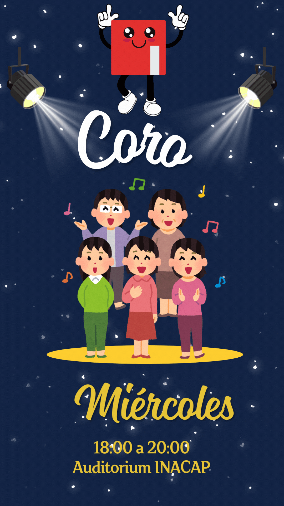
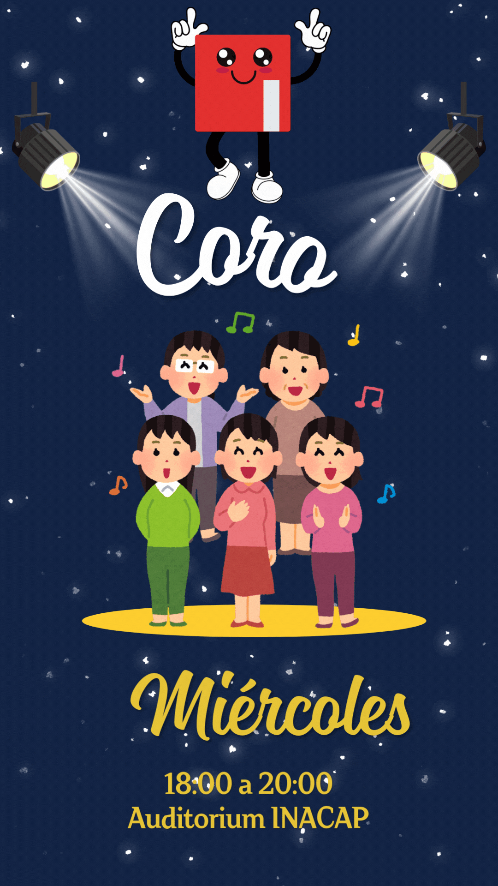
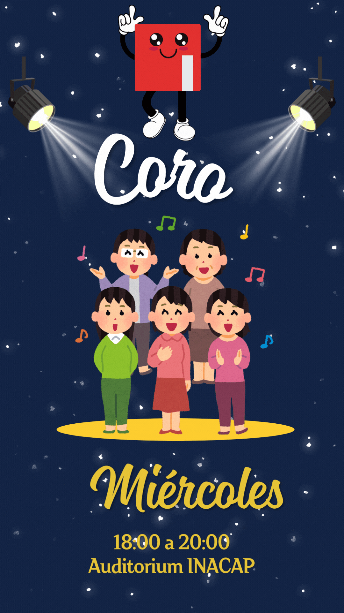

Forma parte de un espacio donde tus ideas cobran vida. Conéctate con otros estudiantes, desarrolla nuevas habilidades y haz historia junto a tu club favorito.
| Club | Descripción |
|---|---|
| Club de Lectura | Explora mundos literarios y comparte tus libros favoritos. |
| Club Magic Commander | Juega y comparte estrategias de Magic: The Gathering. |
| Club de Ajedrez | Desarrolla tu pensamiento estratégico y compite en torneos. |
| Club Linux | Aprende sobre software libre, terminales y sistemas operativos. |
| Club de Cinematografía | Analiza y crea cine, participa en debates y grabaciones. |
| Club de Juego de Mesa | Comparte tardes de diversión con juegos clásicos y modernos. |
| Club de Video Juegos | Comparte tus títulos favoritos y participa en torneos gamers. |
